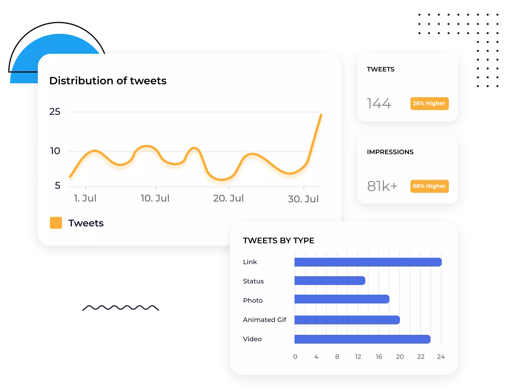

Track and view key metrics to discover the effectiveness of your X marketing strategy. Access an extensive X (formerly Twitter) analytics dashboard with insightful X KPIs such as engagement, impressions, retweets, and more.